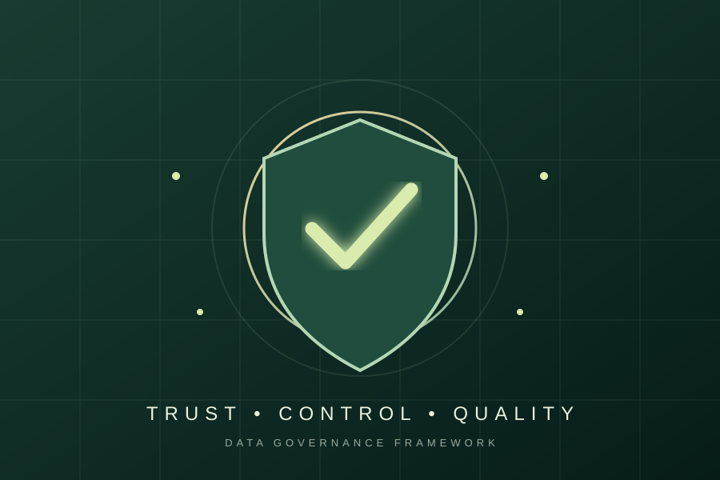
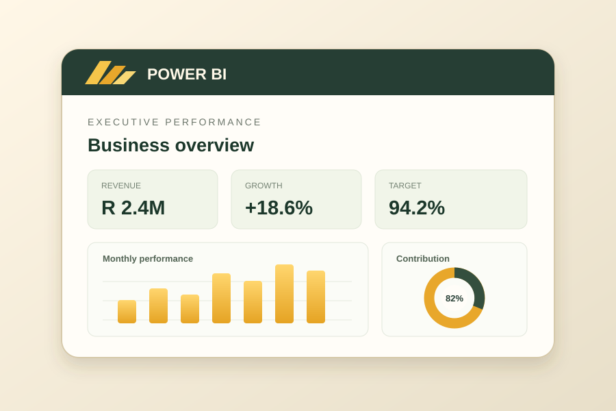
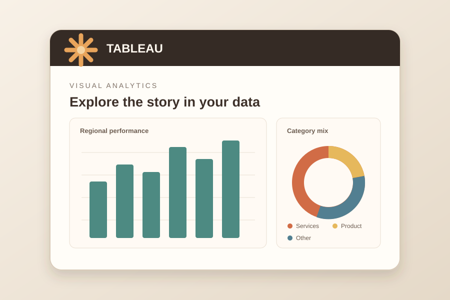

DS / 01TRUST SYSTEMS
DQ
QUALITY
BY DESIGN
BY DESIGN
Data Quality & Governance
A framework for stronger data quality, governance practices and trusted information.
Explore framework ↗YOUR DATA. YOUR NEXT CHAPTER.
I'm your AI guide. Let me introduce you to Felicia's work, projects and data journey.
DATA · INSIGHTS · IMPACT
DATA QUALITY · GOVERNANCE · BUSINESS INTELLIGENCE
I'm Felicia Mabena — a data professional who connects data quality, governance and analytics to help people make better decisions.
A LITTLE ABOUT ME
01 — PROFILEI work across data quality and governance, analytics, reporting and business intelligence. I enjoy turning complex information into something clear, useful and actionable.
Dear Sis Data is where I bring together my projects, technical skills and curiosity about how data and technology can solve real problems.
Let's talk about what data can do ↗SELECTED WORK
Move through the collection, choose a project and open the work behind it.

A framework for stronger data quality, governance practices and trusted information.
Explore framework ↗
Interactive dashboards and business reporting designed to make trends easier to understand.
Explore Power BI ↗Queries and analysis that explore datasets, answer questions and surface useful patterns.
Explore SQL ↗
Structured spreadsheets, analysis and reporting to organise information and support decisions.
Explore Excel ↗
Visual analysis and dashboards that help people explore information from different angles.
Explore Tableau ↗A custom portfolio assistant built with JavaScript, HTML and CSS to answer questions about my skills, projects and experience.
DRAG OR USE THE ARROWS TO EXPLORE
TOOLS I WORK WITH
From data preparation to visual storytelling and governance, I bring together tools that help turn information into something useful.
THE PROFESSIONAL JOURNEY
PeopleTree Group
Developing dashboards and reports across Tableau, Power BI and Microsoft Fabric, working with SQL, Excel, DataHub and enterprise data sources.
PNet / CareerJunction
Led data quality and management work, developed governance policies and processes, and delivered reporting and dashboards.
SA Digital Villages
Worked across systems administration, data catalogue and metadata management, website operations and system testing.
HAVE A QUESTION OR OPPORTUNITY?
For roles, collaboration, portfolio design or data projects, I'd love to hear from you.
Email Felicia ↗